.PNG)
Gambar untuk lomba Eudaimoni art, dimana menggambar sebuah refleksi dari hidup bermakna, kejujuran, pengalaman sensorik dan kesejahteraan jiwa. dan kebetulan ini salah satu gambar yang paling terbaru ketika semester 1 dan juga menggunakan 2 aplikasi yakni, aplikasi gambar: Microsoft PowerPoint, Krita
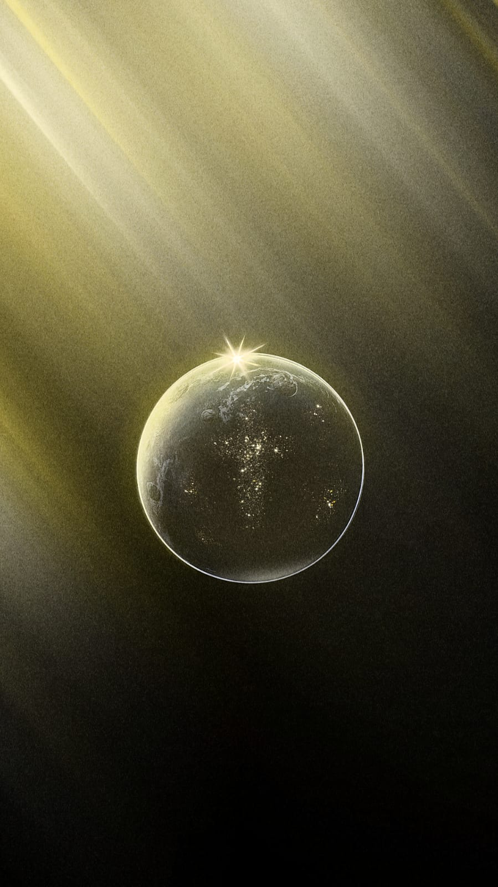
Saya membuat gambar ini di dalam Canva, dimana ada Planet namun tidak hanya planet saja, ternyata ada cahaya kota besar yang berbentuk salib dimana saya meletakan puluhan bintang kecil di planet, sehingga ketika di lihat jarak jauh, terlihat seperti cahaya kota.
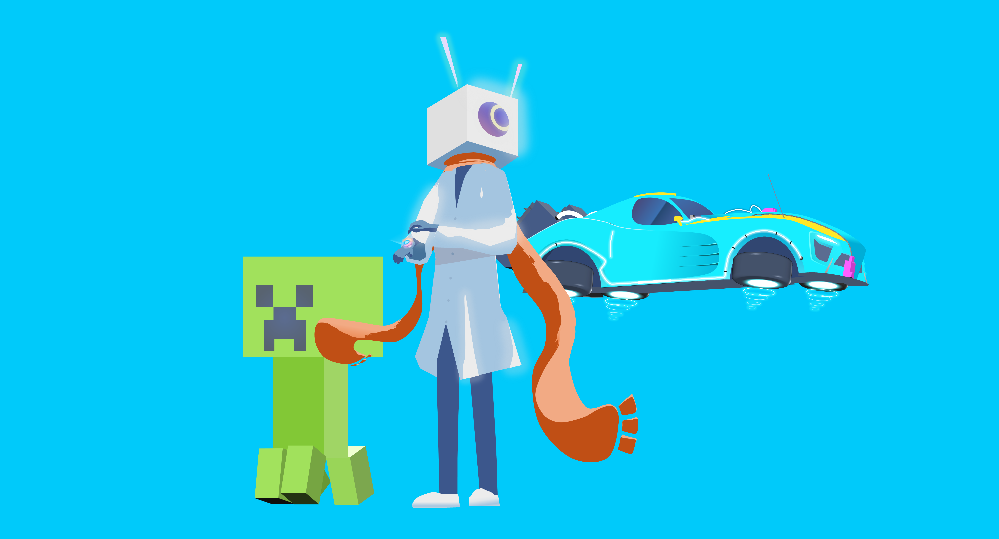
Gambar ini dibuat saat ALP web programming dimana saya sedang membuat wallpaper shop, dan dibuat dari Microsoft PowerPoint
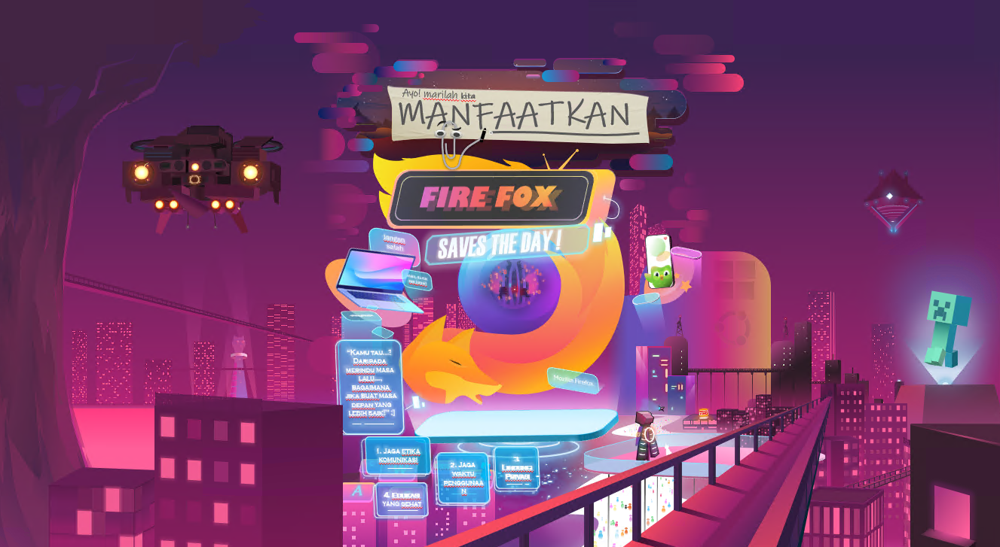
Gambar ini salah satu memiliki object/layer yg banyak yang pernah ku buat, biasanya untuk sekedar hobi saja, dan terdapat gabungan dari inspirasi game-game yang menurut ku bagus, kemudian juga ada sedikit campur dengan dunia nyata seperti logo Firefox. Aplikasi gambar: Microsoft PowerPoint
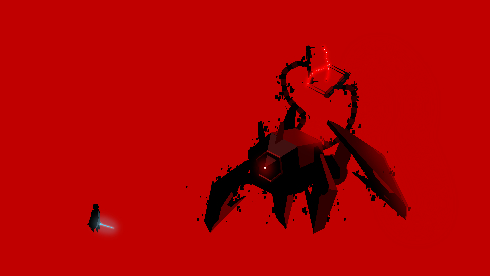
Gambar ini dibuat dengan menggunakan 3D objek kemudian disatukan sehingga berbentuk robot, dan ada satu karakter yg terinspirasi dari game indie "Hyper Light". Aplikasi gambar: Microsoft PowerPoint

Gambar ini dibuat ketika saya mencari wallpaper untuk hp ku dengan searching di google, namun ada nya cuman versi yang blur, sehingga saya membuat versi replikasi yang hampir mirip dengan di google. Aplikasi gambar: Microsoft PowerPoint
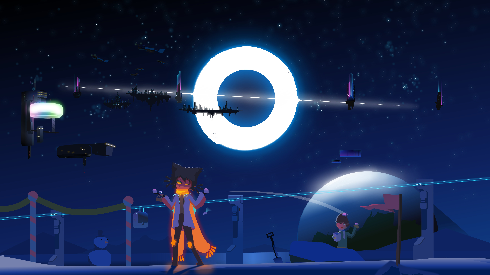
Gambar ini dari halaman utama home page versi malam. Aplikasi gambar: Microsoft PowerPoint
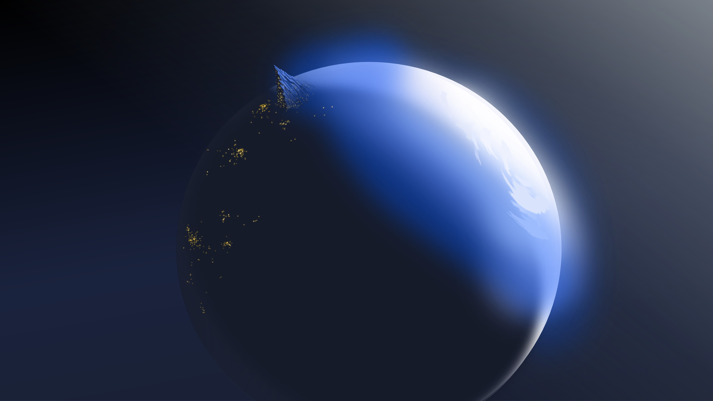
Planet. Aplikasi gambar: Microsoft PowerPoint
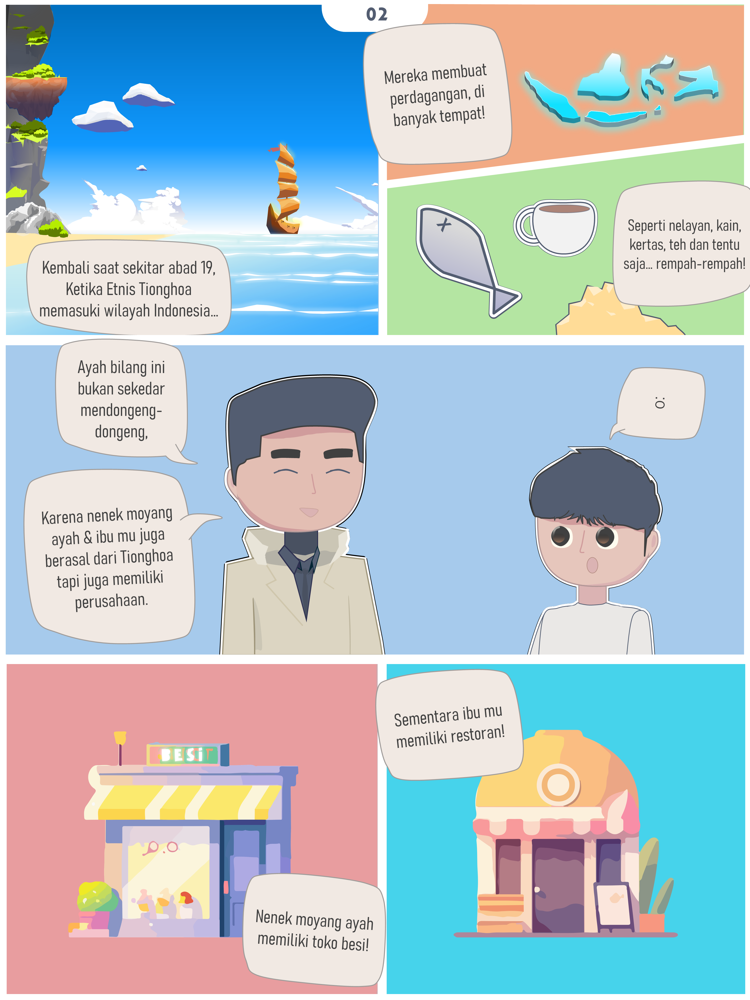
Salah satu bagian dari komik untuk mengerjakan AFL Becoming Indonesia. Aplikasi gambar: Microsoft PowerPoint
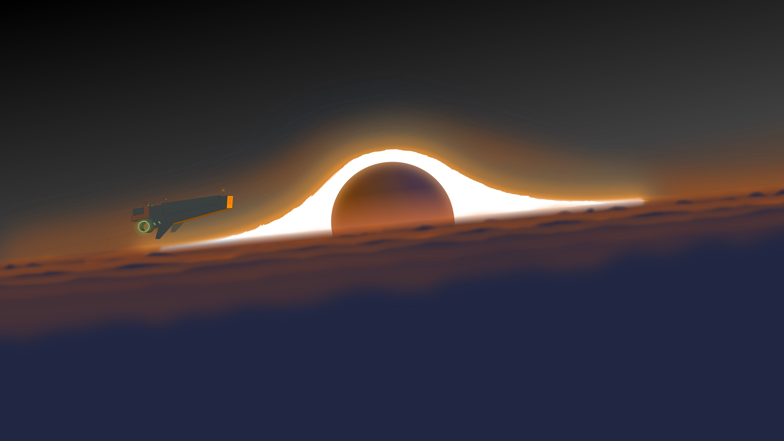
Lubang hitam? Aplikasi gambar: Microsoft PowerPoint

Gambar pada masa SMA, ketika saat itu saya suka era-era steampunk. Aplikasi gambar: Microsoft Paint

Ini salah satu gambar yang awal nya terinspirasi di salah satu game yang cukup terkenal, namun di sisi lain, gambar ini termasuk salah satu karya yang membuka banyak skill baru ketika menggunakan aplikasi Microsoft PowerPoint, jika dilihat dari detail, aslinya mereka cuman elemen awan yang kemudian ku gradasi dan duplikasi sebanyak ratusan kali sehingga membentuk daun pohon dan awan yang menarik jika di ihat dari jauh. Aplikasi gambar: Microsoft PowerPoint

Gambar pada masa-masa sebelum akhir SMA, saya menyoba menggambar gunung. Aplikasi gambar: Microsoft PowerPoint
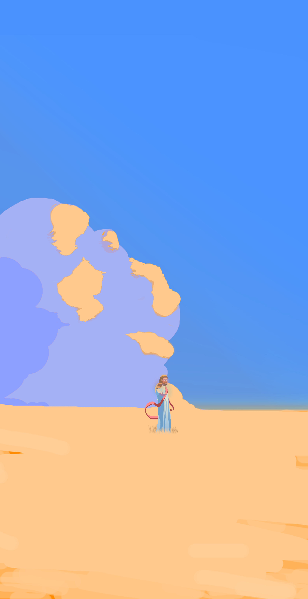
Gambar wallpaper kristen untuk Hp. Aplikasi gambar: Microsoft PowerPoint, Krita
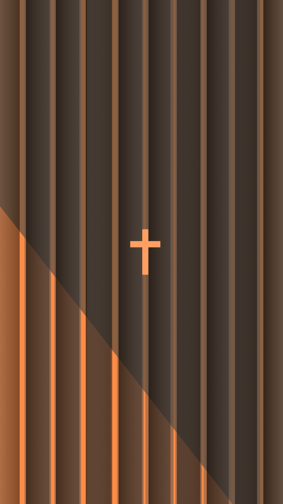
Gambar ini buat dari Canva, dimana saya bikin wallpaper kristen

Gambar dalam Microsoft PowerPoint saat SMA, awalnya saya belum mahir dengan Microsoft PowerPoint jadi hal yang bisa ku lakukan, adalah membuat art dengan gaya minimalis

Ketika saya di UKM Kanvas, saya diberi tugas untuk mendesign character dengan tema batik, alhasil saya juga mencampurkan inspirasi dari game, namun masih bertema batik. Aplikasi Gambar: Microsoft PowerPoint
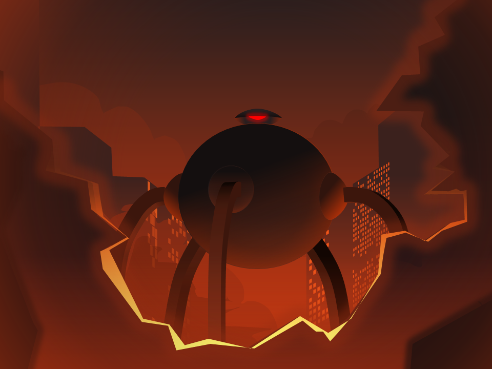
O M N I D R O I D ,salah satu robot villain di film Incredible.. ya saya juga membuat gambaran sederhana saat di kelas UKM Kanvas, namun karena waktu pengerjaan kurang lama, sehingga hasilnya terlihat terlalu polos, namun warna nya tidak buruk. Aplikasi Gambar: Microsoft PowerPoint
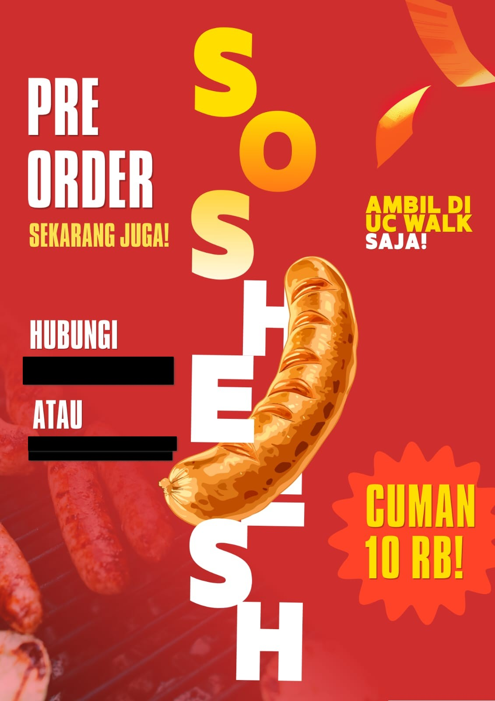
Gambar poster ketika masa kelas E2, dimana menjual sosis (sudah tutup). Aplikasi gambar: Canva
Ini adalah salah satu gambar ketika awal-awal baru menggunakan Microsoft PowerPoint, saat itu saya mau buat wallpaper untuk laptop ku dan, saya mendapatkan inspirasi sebagian besar dari game "Alto Adventure". Aplikasi Gambar: Microsoft PowerPoint
Menggambar planet untuk pertama kali di microsoft paint ketika zaman saya masih SMA.

Ini adalah percobaan membuat gambar dengan style anime, awalnya bermula ketika saya mengikuti lomba dari Clip Studio Paint #46, dimana di akun Instagram-nya mengadakan lomba gambar digital dengan tema membuat illustrasi mengenai kucing! fakta menarik nya karya ini juga memiliki hampir 1700 jumlah elemen objek terlibat hanya dalam 1 gambar ini, kebanyakan untuk membuat atap bangunan, menara tinggi yang berbentuk kepala kucing. cukup melelahkan.
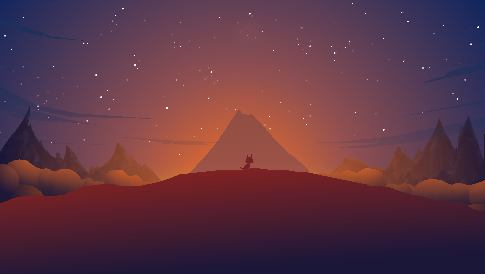
Terinspirasi dari 2 game: ALto Odyseey dan Journey. kebetulan juga saya menggambar ini hanya untuk buat wallpaper laptop.
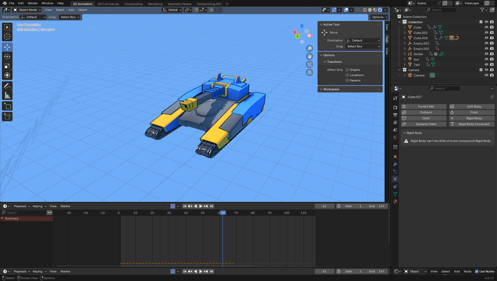
Terinspirasi dari 1 game: Art of War 3 rts. dimana saya membuat 3D Tank di blender.

Dulu saya terinsipirasi membuat kapal perang sci-fi dari suatu genre game. Aplikasi gambar: Microsoft Paint
.png)
Dulu saya terinsipirasi membuat kapal perang sci-fi dari suatu genre game. Aplikasi gambar: Microsoft Paint

Kapal era perang dunia 2 bernama "Bismarck". Aplikasi gambar: Microsoft Paint

Kapal era perang dunia 2 bernama "Bismarck" dengan cat warna sejarah-nya. Aplikasi gambar: Microsoft Paint
Ini gambar sebuah tank ketika saya menggambar dengan microsoft paint saat SMA, waktu itu saya suka meluangkan waktu untuk menggambar tank, karena mereka keren..
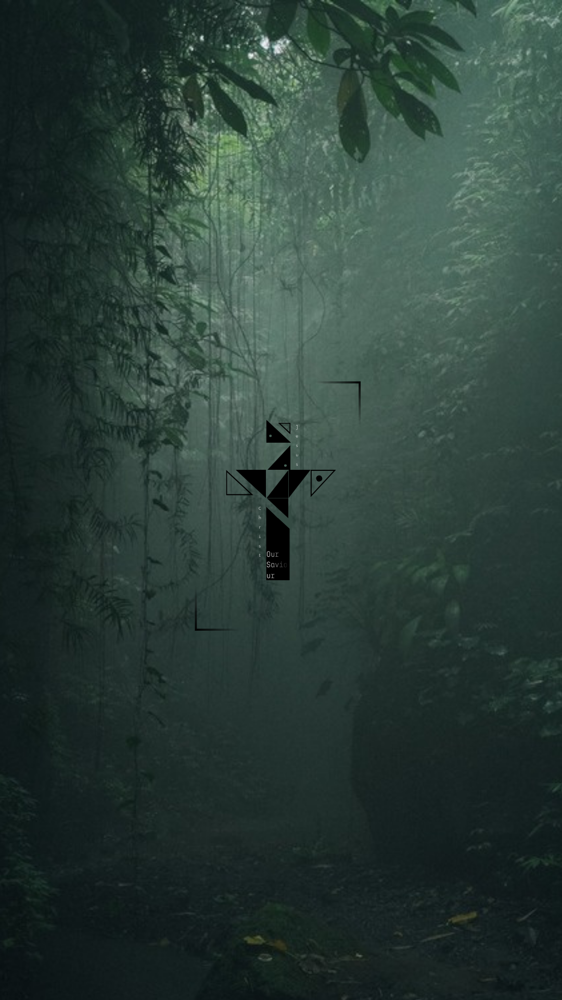
Gambar ini buat dari Canva, dimana saya bikin wallpaper kristen
Salah satu gambar yang merasa nostalgia walaupun buatnya pada masa SMA, waktu itu saya sangat suka konsesp floating island, floating city, fantasi begitu, dan kemudian saya menggambarkan ini juga untuk wallpaper. Aplikasi gambar: Microsoft Paint
gambar random di Microsoft PowerPoint
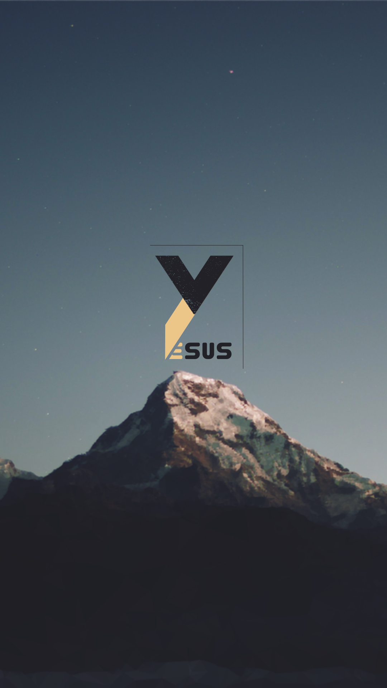
Gambar ini buat dari Canva, dimana saya bikin wallpaper kristen